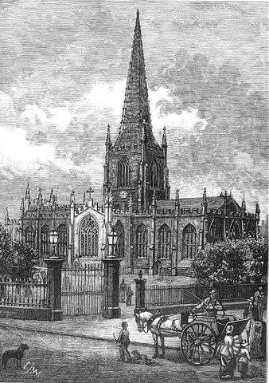
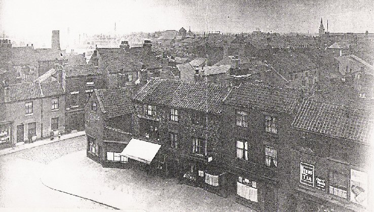
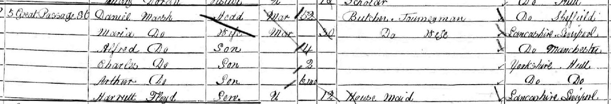

Daniel Marsh, 1795-1868

Daniel Marsh is thought to have been baptised in Sheffield parish church, later the Cathedral, in March 1795, the son of George and Rachel Marsh. He met a young Mary Shaw in Sheffield and by 1818 they had a daughter named Anne. We know nothing of their early life until they emerge again on May 6 1828 on board the 'Robin Hood' from Liverpool to New York, on this occasion without Anne. Two years later in April 1830, Daniel, Mary and daughter Anne, are registered on the same ship, this time from Liverpool to Boston Massachusetts, on route to Brighton, Massachusetts. Later, in 1830, Daniel is listed in the Boston Directory as a butcher of Sea Street, Boston.

By 1834 Daniel and the family have returned to Liverpool. Daniel ran a butchers stall in St Martins Market and is listed in Pigots Directory. In 1841 he appears in Skidaw Place, Ennerdale Road. He is 45 and still living with Mary Marsh. Unfortunately the 1841 census does not tell us his marital status or relationship to Mary as it has not been possible to find evidence of a marriage. Hannah Shaw, Mary's mother, is also resident with them. By the 1851 Liverpool census, Mary is shown as a widow, from Sheffield, living with her daughter Ann and son in law, William Hankin, who is also a butcher.
The 1844 directory shows Daniel still living in Ennerdale Road with stalls at 24 and 25 St Martins Market. St Martins Market was known locally as 'Paddy's Market' and was a feature of Scotland Road. What happens next is unclear, but by 1847 Daniel has moved to Manchester and has fathered a child, Alfred, by Maria Floyd. They are living at 31 Wooton Street, Chorlton and the birth registration records Daniel and Maria as married, however a marriage registration cannot be found. It may be possible that the Mary in the 1841 census was Daniel's wife and that he may have left her and married Maria bigamously, but at this stage there is no evidence for this. Certainly in the directories of 1848-50 Mary Marsh is now listed as the butcher at 24 and 25 St Martins Market.
Whilst in Manchester Maria gives birth to their first child Alfred Marsh. Their stay in Manchester was short and they appear again Kingston upon Hull in 1848. Again, Daniel appears in the local directories as a butcher of Great Passage Street, Myton, Hull. By 1849 their second child, Charles Marsh , is born. Although we have found a record of Charles Marsh's baptism we are unable to trace his birth registration. The 1851 Census shows the family living at 5 Great Passage Street, and along with the family is servant Harriet Floyd, described as a servant, but actually Maria's sister.


But the family were on the move again before 1858 and by the time of the 1861 Census they had arrived in Nottingham. They appear in Martins Yard, a court in the notorious Narrow Marsh area of Nottingham. The area was one of extreme poverty and therefore a indication that the family had fallen on hard times. Between 1847 and 1858 Daniel and Maria had five children. As well as Alfred and Charles, there was also Arthur, George and Sarah.
Daniel Marsh died in October 1868 and was buried at St Stephens, Sneinton, leaving Maria, his widow living with their two youngest sons Arthur and George.